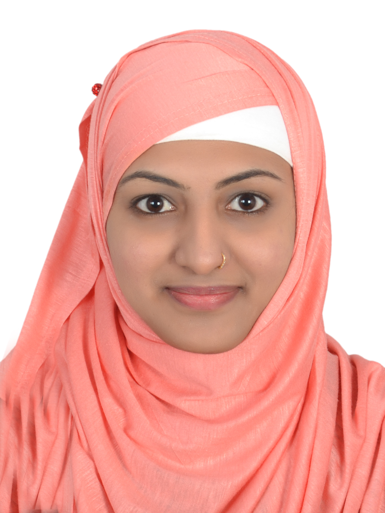

I am a recent graduate with bachelor of science degree in computer science from
Bangalore university, seeking for developer position in IT industry.
I have excellent
programming skills along with good problem-solving skills. I'm looking to acquire a
challenging position in an organisation where
I can best utilize my skills and education.
Medium of instruction-English
Bangalore university,Bangalore(India)
Completed with first class in following subjects,
English,Hindi,Computer Science,
Physics, Mathematics.
2010-2012
Bangalore University(India)
10 years
Holy Crescent English School,Bangalore(India)
Reading novels,learning to code, cycling, cooking and creating new recipes.